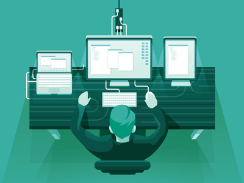
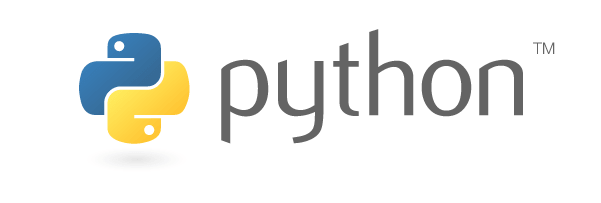
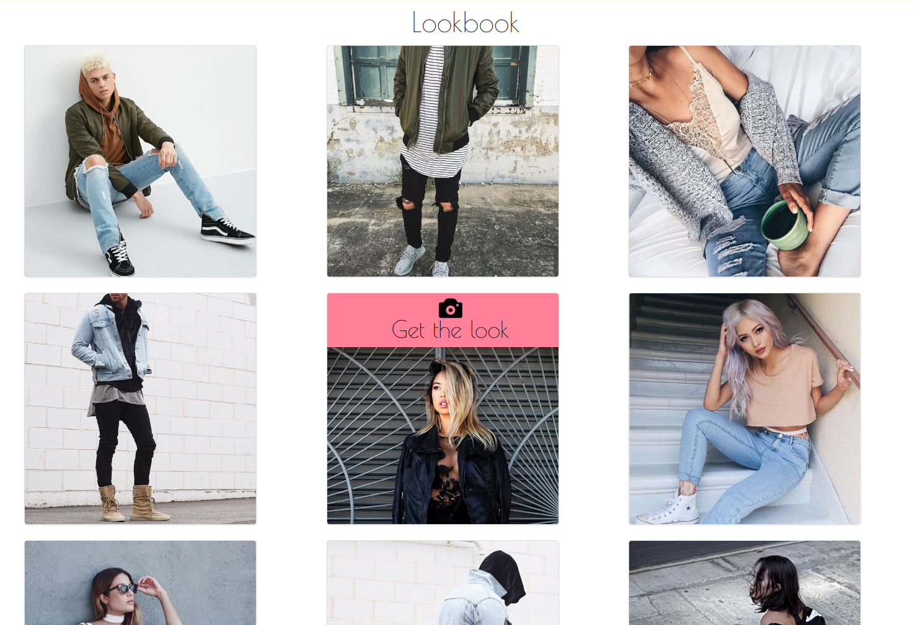
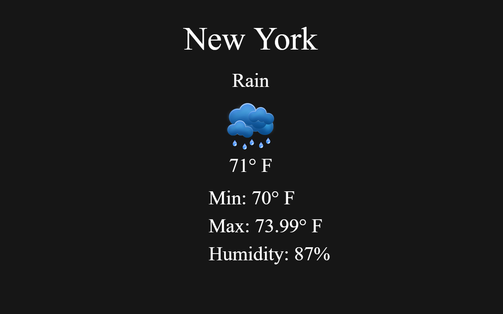
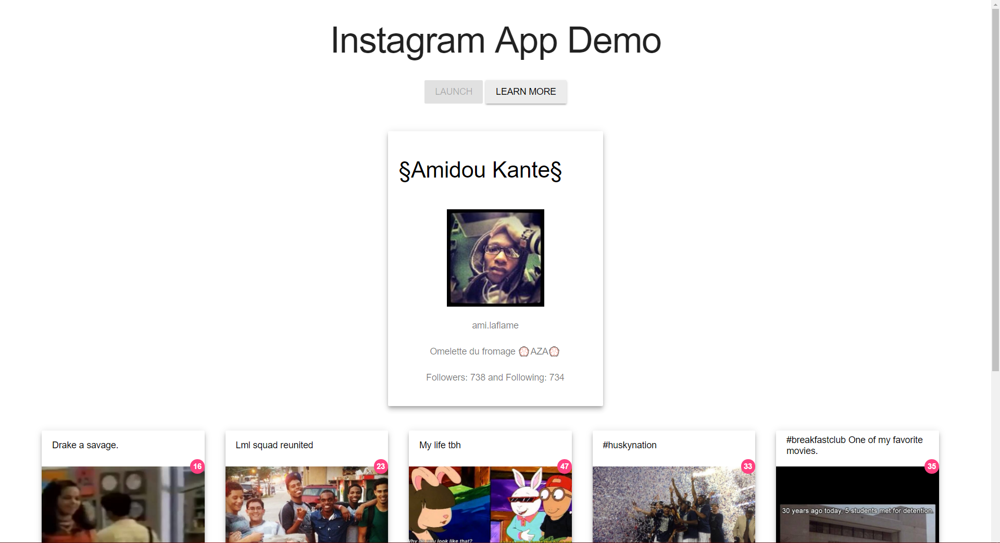

About Me

Modern Day Renaissance Man
My name is Amidou Kante and I'm a 21 year old New Yorker who aspires to be a Full-Stack Web Developer. As cliché as it may sound, technology and art has always been apart of my life ever since I was a kid. I started off self teaching myself simple video game design as well as web design. From making my own version of Pokémon to various dynamic websites. My desire to learn and never-ending curiosity has allowed for something I saw as a hobby to take off into something that I see as a career. I spend my time playing around or learning the newest technology and design principles. I am always experimenting with different applications and designs no matter what time of day. Currently I am working on different web applications while continuing to add onto my coding skill set. Check out my website and contact me about any questions or inquiries.
My interests
Software & Web Development, Video Game Design, VR/AR, AI, Graphic Design, Music Production, Fine & Modern Art
My Skills





Previous Work
Quote Generator

I made a small quote generator that uses an API to display random Kanye West quotes and was a step in allowing me to be able to work with html and javascript applications.
|HTML5|CSS3|JavaScript|Ajax|API|Material Design
|HTML5|CSS3|JavaScript|Ajax|API|Material Design
Pokemon Go Calculator

I created a pokemon go calculator that is capable of telling a person how many pokemons they can evolved based on certain values.
|HTML5|CSS3|JavaScript|Material Design
|HTML5|CSS3|JavaScript|Material Design
Fashion Site Template

A sample fashion site template that I made that is able to support a CMS system and is built upon a Bootstrap framework. This template will be an ongoing project and eventually become a fully function site.
|HTML5|CSS3|JavaScript|Bootstrap
|HTML5|CSS3|JavaScript|Bootstrap
Local Weather App

This weather app is capable of giving a user real time weather conditions based on their location. With this project I was able to test my skills of using GET methods in order to display information from an API. I have plans to keep updating the project to have additonal features.
|HTML5|CSS3|JavaScript|Ajax|API|Bootstrap
|HTML5|CSS3|JavaScript|Ajax|API|Bootstrap
UI/UX Elements

This is where I showcase the various UI/UX templates that I have created. This is where my main creativity shines so that I can show a client different kinds of elements that they can incorporate into their site.
|HTML5|CSS3|JavaScript|Material Design|UI/UX
|HTML5|CSS3|JavaScript|Material Design|UI/UX
Instagram Clone

This was one of my favorite projects to work on, because it allowed me to explore how front end and back end programming function together. Using instagrams API I was able to pull a users information and their media and post it into specific locations in the document. I went for a minimalistic approach and plan on add additional features to the web app.
|HTML5|CSS3|JavaScript|API|Ajax|Material Design|
|HTML5|CSS3|JavaScript|API|Ajax|Material Design|